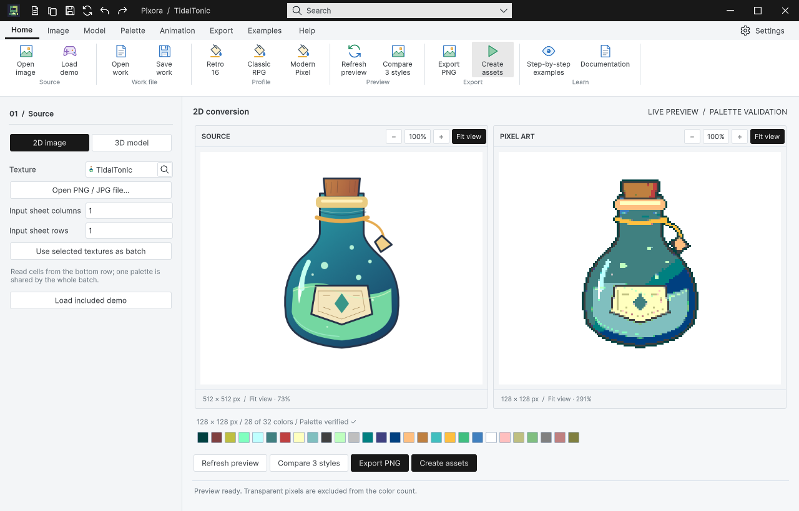

Tracefolio REPORTS & ISSUES
Tracefolio REPORTS & ISSUESPixora 최신 샘플·배포 경계 및 Affinity 원본 위치 정리
완료옛 기본 데모와 개발 지침의 배포 혼입을 수정하고 새 프로젝트 설치 및 샘플 제거 실행을 확인했습니다. 바탕화면 작업물도 프로젝트 안으로 정리했습니다.
작업 결과
Studio 기본 데모를 TidalTonic 이미지와 ClockworkKingfisher 모델로 통일했습니다. 옛 로봇 검증 에셋은 GUID를 보존해 Development로 이동했고 고객 패키지에서 제외했습니다. Affinity 원본 7개의 동일성을 확인하고 바탕화면 전용 작업 폴더를 프로젝트 Temp로 이동했습니다.
변경 내용
적용 내용
기존 배포본에는 Pixora 개발용 AGENTS와 옛 Demo* 자료가 포함되어 있었습니다. 개발 지침은 Docs/Development로 이동하고 ExportPackage 입력을 파일 단위로 제한했습니다.
재편집 Works 두 개, START-HERE, Third-Party Notices, 편집용 .af/.blend 원본 ZIP과 9개 언어 가이드를 갱신했습니다. 배포 기준 및 Design Data Table 대조 문서를 Docs/Release에 추가했습니다.
Affinity 원본은 ArtSources/Pixora/Affinity에서 관리합니다. 내보내기 도구는 프로젝트 경로를 사용하며 자동 Desktop 우회를 제거했습니다. 프로젝트 경로 SDK 로드가 PERMISSION_DENIED였던 실제 실패는 보존합니다. 이를 근거로 바탕화면만 가능하다고 단정하지 않습니다.
교훈: 프로젝트 원본·출력·임시 자료를 바탕화면에 남기지 않는 규칙을 전역 지침에 통합했습니다. 설치본·설정 저장소 해시가 일치하며 전역 변경 8b4ca04를 main에 푸시했습니다. 다른 실행 중 대화가 자동 반영했다고 주장하지 않습니다.
검증

Unity 6000.0.83f1 / Windows 실제 설치 실행: 기본 이미지·모델, 입력 1×1 복원, Works 2개와 씬 10개를 확인했습니다. Samples 폴더를 제거한 별도 실행에서도 본체 창이 열렸습니다. 설치 결과, 샘플 제거 실행.
최종 재생성 패키지 pathname 감사: Pixora 개발 AGENTS 0, Development 0, 옛 Demo* 0, 씬 10, 원본 ZIP 포함, 150자 이상 경로 0. DataTable의 Integrations/AI/AGENTS.md는 고객 기능용 AI 안내이며 개발 지침과 구분해 유지했습니다. 최종 패키지 감사.
바탕화면 전용 폴더가 없고 원본 7개 SHA-256이 프로젝트 파일과 일치함을 확인했습니다. 위치 정리 근거. 실제 Unity PNG 132155바이트를 무손실 WebP 77448바이트로 압축했으며 원본 해상도 1280×820을 유지했습니다.
남은 사항
심사 제출 자체는 수행하지 않았습니다. Asset Store Tools Validator·Portal 입력·AI 지원 고지, 지원 OS/Unity/렌더 파이프라인 검증, 프리팹 방향/피벗 최종 감사, 서로 다른 Templete 버전 설치 순서·덮어쓰기 보호는 별도 심사 전 확인 항목입니다. 같은 버전 공존을 서로 다른 버전 호환 증거로 쓰지 않습니다. DataTable 전체 기능 QA를 이번에 다시 실행한 것으로 보고하지 않습니다.
자동 승인 검토가 Pixora 폴더 전체 스테이징을 거부했습니다. 이후 신규 파일을 독립 생산 프로젝트와 대조한 정확한 파일 목록을 작성해 커밋했고, 다른 작업의 변경은 제외했습니다. Unity 생성 YAML의 기본 빈 값 뒤 공백은 diff --check에서 검출되었으며 컴파일 오류로 오인하지 않습니다.
작업 시간
- 제안 시간: 최초 10
20분. 17:33 KST에 추가된 심사 기준·대조·설치 검증에 1015분 추가 예상으로 안내했으나 이를 초과했습니다. - 실제로 완료된 시간: 시작 2026-10-31 17:13:26 KST. 구현·설치 검증 종료 2026-10-31 17:58:58 KST, 경과 45분 32초. 보고서 공개 배포는 이후 별도 확인합니다.
- XERJ: 사용 — TutorialBuilder를 XERJ로 검색하고 현재 소스 및 독립 Unity 실행과 대조했습니다.